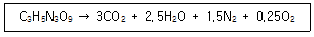
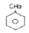
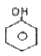
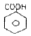
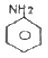
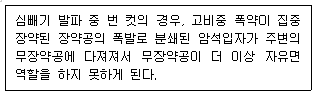
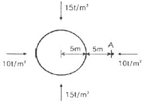

화약류관리산업기사 (2010-09-05 기출문제)
1과목: 일반화약학
1. 다음 화약류 중 폭연하는 것은?
- 무연화약
- DDNP
- TNT
- ANFO
(정답률: 알수없음)

2. 화약류가 폭발하여 최대 압력을 나타낼 때까지의 시간구배(시간 기울기)를 의미하는 것은?
- 맹도
- 폭속
- 화약력
- 폭발열
(정답률: 알수없음)
3. 다음 중 안정도 시험과 관계없는 시험법은?
- 유리산시험
- 탄동진자시험
- 가열시험
- 내열시험
(정답률: 알수없음)
4. 다음 화약류의 분류 중 도화선이 속하는 것은?
- 추진약
- 화공품
- 폭약
- 파괴약
(정답률: 알수없음)
5. 노벨이 역사상 처음으로 발명한 다이너마이트의 종류에 해당하는 것은?
- 규조토 다이너마이트
- 스트레이트 다이너마이트
- 암모니아 다이너마이트
- 젤라틴 다이너마이트
(정답률: 알수없음)
6. TNT 제조에 필요한 물질이 아닌 것은?
- 주석산
- 톨루엔
- 질산
- 황산
(정답률: 알수없음)
7. 다음 폭약 중 질산에스테르화합물이 함유된 것은?
- 테트릴
- TNT
- 피크린산
- 젤라틴 다이너마이트
(정답률: 알수없음)
8. 순폭에 관한 설명 중 틀린 것은?
- 순폭도는 최대 순포거리를 약포의 직경으로 나눈 수치로 나타낸다.
- 밀폐 강도가 높을수록 순폭성이 증가한다.
- 한계(critical)약경 이하에서는 순폭이 일어나지 않는다.
- 폭약이 흡습 고화된 때에는 폭속은 저하하나 순폭도는 증가한다.
(정답률: 알수없음)
9. 니트로글리세린 1kg을 다음과 같이 완전히 반응시켰을 때 발생가스의 체적은 표준상태를 기준으로 약 몇 L인가?

- 315
- 450
- 615
- 715
(정답률: 알수없음)
10. 원료의 혼합 공정시 둔강재료 중유(重油)를 사용하여 제조하는 화약은?
- 카일릿
- 질산암모늄 유제폭약
- 흑색화약
- 아마톨
(정답률: 알수없음)
11. 다음 중 산소공급제로만 나열되어 있는 것은?
- 디니트로나프탈렌, 목분, 전분
- 질산암모늄, 니트로글리세린, 니프탈렌
- 과염소암모늄, 목분, 전분
- 질산암모늄, 과염소암모늄, 질산칼륨
(정답률: 알수없음)
12. 슬러리 폭약의 특징이 아닌 것은?
- 내수성이므로 수공에서도 사용이 가능하다.
- 충격에 민감하다.
- 예감제로 TNT도 사용될 수 있다.
- 폭발 후 유독가스가 적다.
(정답률: 알수없음)
13. 다음 중 도폭선의 심약으로 사용되는 폭약으로 발화점은 약 230℃이고, 폭속은 약 8500m/s인 물질은?
- 흑색화약
- 무연화약
- 헥소겐(RDX)
- 니트로글리세린
(정답률: 알수없음)
14. 다음 중 600kg/cm2의 강압에서도 사압(Dead pressure)이 없는 것은?
- 뇌홍
- DDNP
- 테트라센
- 아지화연
(정답률: 알수없음)
15. 도폭선에 대한 설명으로 옳은 것은?
- 제1종 도폭선은 펜트리트롤 종이테이프로 감은 끈 모양의 화공품이다.
- 6호 뇌관으로는 기폭되지 않아야 한다.
- 평균 폭속은 2000∼3000m/s이다.
- 석재 채취를 위한 발파에 사용할 수 있다.
(정답률: 알수없음)
16. 다음 중 니트로화 하여 피크린산을 제조하는데 사용되는 것은?




(정답률: 알수없음)
17. 다음 중 폐약처리에 NaOH 수용액을 사용할 수 없는 것은?
- 뇌홍
- 질화납
- 디아조디니트로페놀
- 테트라센
(정답률: 알수없음)
18. 디니트로벤젠의 주용도를 옳게 설명한 것은?
- 기폭제로 사용한다.
- 폭약의 예감제로 사용한다.
- 작약으로 사용한다.
- 도화선 심약으로 사용한다.
(정답률: 알수없음)
19. 니트로글리세린을 제조하려고 한다. 순도 100%의 정제글리세린에 혼산을 가하여 제조할 때 제품 1ton를 생산하기 위하여 정제글리세린은 약 몇 kg이 필요한가?
- 202
- 4⑤
- 810
- 1215
(정답률: 알수없음)
20. 니트로글리세린 제조 장치를 회분식과 연속식으로 구분할 때 다음 중 회분식에 해당하는 것은?
- 나탄(Nathan)법
- 인젝터(Injector)법
- 납(N.A.B)법
- 비앗지(Biazzi)법
(정답률: 알수없음)
2과목: 발파공학
21. 다음의 용어에 대한 설명으로 옳지 않은 것은?
- 미주전류 : 발파현장부근에 동력선, 전동선, 전화선, 수도관 등 전기가 통할 염려가 있는 금속류나 도전성의 암반이 있을 때 발생한다.
- 불발 : 점화작업을 했는데도 불구하고 전혀 폭음이 발생하지 않는 경우를 말하는데 뇌관의 일부만 기폭하고 전폭약이 폭발하지 않은 것은 제외한다.
- 잔류 : 천공에 장약한 폭약의 일부가 폭발하지 않은 채 남아 있거나 전폭약이 인접한 발파공의 폭발로 날려가 불폭된 것을 말한다.
- 전지작용 : 공내에서 광물과 알칼리성 용액 등의 화학작용에 의해서 전류가 발생하는 현상을 말한다.
(정답률: 알수없음)
22. 저항 1.4[Ω]의 전기뇌관 30개를 직렬로 결선하고 단선 1m당 저항 0.021[Ω]인 모선(총연장 100m)을 사용하여 전기발파하려면 발파기의 기전력은 몇 [V] 이상이어야 하는가? (단, 전류는 1.5[A]로 하고, 발파기의 내부저항은 30[Ω]로 한다.)
- 70.6[V]
- 75.6[V]
- 100.2[V]
- 111.2[V]
(정답률: 알수없음)
23. 다음 중 발파해체공법에 대한 설명으로 옳지 않은 것은?
- 공사 기간의 단축 및 공사비용이 경제적이다.
- 철탑, 건물 등 시공 대상 구조물이 다양하다.
- 지속적인 소음 및 분진 발생이 없다.
- 대상체 주변 환경에 크게 영향을 받지 않는다.
(정답률: 알수없음)
24. NG 60%의 스트렝스 다이너마이트를 기준으로 할 때 암석계수 (kg/m3)의 평균값이 제일 작은 것은?
- 편암
- 석회암
- 안산암
- 사암
(정답률: 알수없음)
25. 다음 중 수직천공과 비교하여 경사천공의 장점으로 옳지 않은 것은?
- 자유면 반대방향의 후면 파괴 감소
- 1 자유면에서 문제성 감소
- 낮은 계단 발파에서 근거리 비산
- 느슨한 암석의 자유면 보호
(정답률: 알수없음)
26. 암석의 특성에 따른 화약류 선정으로 옳지 않은 것은?
- 강도가 큰 암석에는 에너지가 큰 폭약을 사용한다.
- 장공발파에는 비중이 큰 폭약을 사용해야 한다.
- 굳은 암석에는 동적효과가 큰 폭약을 사용한다.
- 고온의 막장에서는 내열성 폭약을 사용해야 한다.
(정답률: 알수없음)
27. 암석의 일축압축강도가 120MPa이고, 인장강고가 20MPa, 전단강도가 40MPa, 점착강도가 30MPa일 때 홉킨슨 효과에 의해 파괴가 발생하기 위한 반사파의 응력의 최소 크기는?
- 120MPa
- 40MPa
- 30MPa
- 20MPa
(정답률: 알수없음)
28. 지연시차가 10∼35ms인 지발전기뇌관을 사용하여 대발파를 하려고 한다. 100∼500ms의 지연시차를 가진 뇌관을 사용하였을 때와 비교하여 암석의 파쇄도 및 비산은 어떠한가?
- 암석은 크게 파쇄되고 멀리 비산된다.
- 암석은 작게 파쇄되고 가까이 비산된다.
- 암석은 작게 파쇄되고 멀리 비산된다.
- 암석은 크게 파쇄되고 가까이 비산된다.
(정답률: 알수없음)
29. 다음 중 잔류 폭약의 발생 원인이 아닌 것은?
- 분말계 폭약의 비중 과대
- 장기 저장에 의한 폭약의 변질
- 전색작업에 의한 뇌관 각선의 절단
- 천공장에 비해서 천공간격이 좁을 경우
(정답률: 알수없음)
30. 직경이 102mm인 무장약공 2공을 천공하여 평행공 심빼기 발파를 실시하는 경우 가능한 심빼기공의 천공장은 얼마인가? (단, 무장약공과 심빼기공의 천공장은 동일하고, 굴진율은 95%로 가정한다.)
- 2.49m
- 3.22m
- 4.24m
- 5.12m
(정답률: 알수없음)
31. 음향파워레벨이 120dB인 천공기계가 반자유 공간에 위치하여 소음을 발생하고 있다. 천공기계로부터 70m이격된 지점에서의 소음은 얼마인가?
- 68dB
- 72dB
- 75dB
- 80dB
(정답률: 알수없음)
32. 발파시 암석이 불규칙하게 튀어나가는 것을 비산이라 하는데 다음 중 비산의 원인으로 옳지 않은 것은?
- 단층, 균열, 연약면 등에 의한 암석의 강도 저하
- 천공오차에 의한 국부적인 장약고의 집중현상
- 과다한 장약량
- 지발뇌관을 이용한 분할발파
(정답률: 알수없음)
33. 다음이 설명하는 발파 이상으로 맞는 것은?

- 소결 현상
- 오버행 현상
- 컷 오프 현상
- 공발 현상
(정답률: 알수없음)
34. 발파풍압(폭풍압)의 원인 중 지반진동에 의해 발생하는 것은?
- 공기압력파(APP)
- 암석압력파(RPP)
- 가스방출파(GRP)
- 전색방출파(SRP)
(정답률: 알수없음)
35. 계단높이 5m, 계단 폭 15m, 암석계수 0.4kg/m3인 암반에 천공경 100mm, 경사도 5:1로 하향 천공하여 지발발파를 실시하고자 할 때, 최대저항선(Bmax은 얼마인가? (단, 사용 폭약은 에멀젼 폭약으로 장전밀도는 1.⑤kg/ℓ이다.)
- 3.08m
- 4.08m
- 5.28m
- 6.28m
(정답률: 알수없음)
36. 다음 중 발파 효과에 대한 설명으로 옳지 않은 것은?
- 폭약을 틈새가 있게 장전하는 것을 부분장전이라 하는데 충격파가 틈새 때문에 일부 완충되므로 발파효과는 저하된다.
- 균열이 있는 암반에서는 천공 간격이 넓으면 폭발생성가스의 누출에 의해 발파효과가 저하되고 비산의 원인이 되므로 천공간격을 좁혀서 발파해야 한다.
- 제발발파는 인접공들이 서로 보강작용을 하게 되어 발파 암량이 많아진다.
- MS 발파법은 파쇄효과가 크고, 암석이 적당한 크기로 잘게 깨진다.
(정답률: 알수없음)
37. 벤치발파에서 소과(규격보다 작은 파쇄석)을 얻기 위한 방법으로 옳지 않은 것은?
- 비장약량(Specific charge)을 높인다.
- 천공간격을 최소저항선보다 크게 한다.
- 1회당 1열씩 기폭시킨다.
- 전색장을 줄인다.
(정답률: 알수없음)
38. 다음 중 발파진동의 감소대책이 아닌 것은?
- 기폭방법에서 역기폭을 사용하여 발파한다.
- Decoupling 효과를 이용하여 제어발파를 실시한다.
- 방진구를 설치하여 진동을 차단한다.
- 인위적으로 자유면을 조성한 후 발파를 실시한다.
(정답률: 알수없음)
39. 다음 중 발파기가 갖추어야 할 성능으로 옳지 않은 것은?
- 휴대가 편리하도록 경량 소형일 것
- 발파기의 능력이 클 것
- 방폭 구조로 되어 있어 메탄, 탄진에 안전할 것
- 금속성 용기를 사용하는 등 파손되지 않도록 제작할 것
(정답률: 알수없음)
40. 다음의 터널 심빼기 방법 중 그 성격이 나머지 셋과 다른 것은?
- 스파이럴 컷(Spiral Cut)
- 팬 컷(Fan Cut)
- 코로만트 컷(Coromant Cut)
- 슬롯 컷(Slot Cut)
(정답률: 알수없음)
3과목: 암석역학
41. 지하공간이 지니는 장점에 속하지 않는 것은?
- 국토의 효율적 이용
- 기밀성
- 보안성
- 통기성
(정답률: 알수없음)
42. 터널 굴착시 지보새로 사용되는 록볼트의 지보효과로 옳지 않은 것은?
- 봉합효과
- 내압효과
- 원지반 아치형성효과
- 풍화방지효과
(정답률: 알수없음)
43. 암석이 탄성적으로 거동하는 것을 더 이상 계속할 수 없게 될 때의 응력 수준을 의미하는 용어는?
- 파괴
- 파단
- 좌굴
- 항복
(정답률: 알수없음)
44. 영률이 1GPa이고 포아송비가 0.25인 암석이 100MPa의 단축인장응력에서 파괴될 때, Huber-Hencky 이론에 의해 구해진 단위체적당 전단변형에너지는 얼마인가?
- 3.45MPa
- 4.17MPa
- 5.15MPa
- 6.82MPa
(정답률: 알수없음)
45. 동방성 물체의 경우 탄성정수인 영률, 강성률, 체적탄성률, 포아송비, 라메정수(Lame's constant) 중에서 몇 개의 정수를 알면 나머지를 계산할 수 있는가?
- 1개
- 2개
- 3개
- 4개
(정답률: 알수없음)
46. 암반 사면이 연약한 풍화암으로 구성되어 있고, 주방향이 존재하지 않는 절 리가 무수히 많이 발달되어 있을 때 발생할 수 있는 사면파괴의 형태는?
- 원호파괴
- 평면파괴
- 쐐기파괴
- 전도파괴
(정답률: 알수없음)
47. 3차원 미소요소가 변형되어 각축 방향으로의 변형률이 각각 εx, εy, εz일때 체적 변형률(volumetric strain)의 크기는?
- εx + εy + εz
- εx · εy · εz
- 1 - (εx + εy + εz
- 1 - εx · εy · εz
(정답률: 알수없음)
48. 암반 분류법인 RMR 법의 구성 인자 중 점수 배점이 낮은 것부터 높은 것의 순서로 바르게 나열된 것은?
- 무결암 강도 - 코어암질지수(RQD) - 불연속면의 상태
- 코어암질지수(RQD) - 무결암 강도 - 불연속면의 상태
- 무결암 강도 - 불연속면의 상태 - 코어암질지수(RQD)
- 불연속면의 상태 - 무결암 강도 - 코어암질지수(RQD)
(정답률: 알수없음)
49. 암석에 한번 가한 하중을 제거하고 다시 같은 방향으로 하중을 제거하고 다시 같은 방향으로 하중을 가하면, 전화에 가한 하중 이상으로 가할 때까지 미소균열음(Acoustic Emission)이 거의 발생하지 않는 현상을 설명하는 것은?
- 카이저(Kaiser)효과
- 후크(Hooke)효과
- 그리피스(Griffith)효과
- 쿨롬(Coulomb)효과
(정답률: 알수없음)
50. 다음 중 암석의 삼축압축시험에서 취성-연성 전이가 가장 높은 압력에서 발생하는 암석은?
- 암염
- 백암
- 셰일
- 화강암
(정답률: 알수없음)
51. 다음의 역학적 모험 중 탄성, 점성 및 소성적 요소를 모두 갖춘 물체는 어느 것인가?
- Bingham 물체
- St.Venant 물체
- Kelvin 물체
- Maxwell 물체
(정답률: 알수없음)
52. 이상적인 탄성체가 되기 위한 조건으로 옳지 않은 것은?
- 재질의 탄성적 성질은 물체 내 모든 점에서 똑같다.
- 물체에 응력이 작용하면 응력방향의 변형률은 작용응력에 반비례한다.
- 재질의 탄성적 성질은 모두 방향에서 똑같다.
- 변형을 일으키는 힘을 제거하면 물체의 크기와 모양은 완전히 원형의 상태로 돌아간다.
(정답률: 알수없음)
53. 암반분류법인 Q-system 에 대한 설명으로 옳지 않은 것은?
- 암반특성을 평가하여 터널 지보량을 산정하기 위해 Barton 등에 의해 제안된 방법이다.
- Q-system은 6개의 변수를 사용하여 암질 지수를 정량적으로 산정한다.
- Q값의 산정에 고려된 RQD/Jn 항목은 블록간의 전단강도 특성을 나타낸다.
- Barton 등은 Q 값에 의거하여 터널 지보체계를 결정하기 위해 등기지수 (equivalent dimeosion) 개념을 도입하였다.
(정답률: 20%)
54. 암석의 일축압축강도시험을 실시할 때, 압축강도에 영향을 미치는 요소에 대한 설명으로 옳은 것은?
- 시험편의 단면적이 같을 때 시험편의 길이가 길어지면 강도는 커진다.
- 시험편의 단면적이 같을 때 시험편 단면의 변이 적을수록 강도는 커진다.
- 시험편의 크기가 커지면 강도는 커진다.
- 하중속도가 증가하면 강도는 커진다.
(정답률: 알수없음)
55. 현지암반내 초기기압측정법으로서 지압을 계산하기 위하여 암반의 탄성계수, 포아송비 등 탄성정수를 필요로 하는 방법은?
- 수압파쇄법
- 응력해방법
- 응력보상법
- 압력터널법
(정답률: 알수없음)
56. 어떤 암석의 일축압축강도 1000kg/cm2, 인장강도 90kg/cm2이고, 모어(Mohr) 응력원에서 포락선이 직선인 경우 암석의 전단강도는 얼마인가?
- 545kg/cm2
- 370kg/cm2
- 275kg/cm2
- 150kg/cm2
(정답률: 알수없음)
57. 직경 40mm, 두께 30mm인 코어 시험편에 대해 축방향 점하중강도시험을 실시한 결과 15kN에서 파괴가 발생하였다. 이 시험편의 인장강도를 추정하면 얼마인가?
- 5.31MPa
- 6.25MPa
- 7.02MPa
- 8.54MPa
(정답률: 알수없음)
58. 평면변형률상태에서 x축 방향의 응력 σx=300kg/cm2, y축 방향의 응력 σy=200kg/cm2이라 할 때 y축 방향의 변형률은 얼마인가? (단, Young률 E=2.5×105kg/cm2, 포아송비 v=0.3)
- 1.2×10-4
- 2.6×10-4
- 3.3×10-4
- 4.7×10-4
(정답률: 알수없음)
59. 다음 그림과 같이 수평과 수직방향의 초기응력이 각각 10, 15ton/m2이 작용하는 등방 등질의 선형탄성 암반내에 반경 5m의 원형터널을 굴착하였다 이때 측벽으로부터 5m 되는 A 지점에서의 반경방향응력(σr)과 접선방향응력 (σθ)은 얼마인가?

- σr=9t/m2, σθ=19t/m2
- σr=19t/m2, σθ=9t/m2
- σr=17t/m2, σθ=27t/m2
- σr=27t/m2, σθ=17t/m2
(정답률: 알수없음)
60. 삼축압축시험을 실시한 암석이 Mohr-Coulomb 파괴이론을 만족하여 이 암석의 내부마찰각은 40°, 점착력은 10MPa이다. 봉압(σ3)이 20MPa일 때 이 암석이 파괴되기 위한 최대주응력은 얼마인가?
- 120MPa
- 125MPa
- 130MPa
- 135MPa
(정답률: 알수없음)
4과목: 화약류 안전관리 관계 법규
61. 위험공실의 시설기중에 과한 사항으로 옳지 않은 것은?
- 위험공실은 내화성 건물로 하여 별채로 할 것
- 위험공실에는 규정에 의한 흙둑을 설치할 것
- 위험공실의 부근에슨ㄴ 저수지·저수조·비상전등 등 불을 끄는데 필요한 설비를 갖출 것
- 위험공실에는 온도 및 습도의 조정장치를 설치할 것
(정답률: 알수없음)
62. 일시적인 토목공사를 하거나 그 밖의 일정한 기간의 공사를 하는 사람이 그 공사에 사용하기 위하여 화약류를 저장하고자 하는 때에 한하여 설치할 수 있는 화약류 저장소는?
- 1급저장소
- 2급저장소
- 3급저장소
- 간이저장소
(정답률: 알수없음)
63. 화약류관리보안책임자 면허가 반드시 취소되는 경우가 아닌 것은?
- 화약류 취급과정에서 폭발사고로 사람에에 중상을 입혔을 때
- 국가기술자격법에 의한 화약류관리산업기사 자격이 취소된 때
- 면허를 다른 사람에게 빌려준 때
- 속임수를 쓰거나 그 밖의 옳지 못한 방법으로 면허를 받은 사실이 드러난 때
(정답률: 알수없음)
64. 화약류저장소 주위세 설치하는 간이흙둑에 대한 설명으로 옳지 않은 것은?
- 간이흙둑의 경사는 75도 이하로 한다.
- 간이흙둑의 높이는 3급전장소에 있어서는 처마의 높이 이상으로 설치한다.
- 정상의 폭은 60cm 이상으로 한다.
- 간이흙둑은 저장소의 바깥쪽 벽으로부터 간이흙둑의 안쪽벽 밑까지 1m 이상 2m 이내의 거리를 두고 쌓아야 한다.
(정답률: 알수없음)
65. 다음 중 “공실”의 정의로 맞는 것은?
- 전폭약포 제작을 위해 저장소 안에 설치된 건축물
- 화약류의 제조과정에서 화약류를 일시적으로 저장하는 장소
- 화약류의 제조작업을 하기 위하여 제조소 안에 설치된 건축물
- 화약류의 취급상의 위해로부터 보호가 요구되는 시설
(정답률: 알수없음)
66. 대발파의 기술상의 기준 중 발파를 하는 장소 및 그 부근의 지형·암층·암질, 사용하고자 하는 폭약의 종류 등을 검토하여 미리 정하고 실시하는 사항으로 거리가 먼 것은?
- 대피 장소
- 약실의 위치
- 폭약의 양
- 갱도의 크기
(정답률: 알수없음)
67. 지상 1급 저장소의 흙둑 바깥면으로부터 몇 m 이상의 빈터를 두어 화재시에 연소를 방지할 수 있도록 하여야 하는가? (단, 법령상 최소거리수준)
- 1.5m
- 2m
- 2.5m
- 3m
(정답률: 알수없음)
68. 다음 중 화약류사용자가 화약류 출납부를 보존해야 하는 기간은?
- 기입을 완료한 날로부터 3년
- 기입을 완료한 날로부터 2년
- 기입을 완료한 날로부터 1면
- 사용허가의 종료 후 1년
(정답률: 알수없음)
69. 운반신고를 하지 아니하고 운반할 수 있는 화약류의 종류 및 수량으로 옳지 않은 것은?
- 미진동파쇄기 5000개
- 도폭선 1500m
- 폭발천공기 600개
- 장난감요 꽃불류 600kg
(정답률: 알수없음)
70. 다음 중 정기안전검사를 받아야 하는 대상 시설에 속하지 않는 것은?
- 꽃불류제조소의 제조시설 중 위험공실
- 1급 화약류저장소
- 2급 화약류저장소
- 3급 화약류저장소
(정답률: 알수없음)
71. 화약류 취급소의 설치기준에 관한 설명으로 옳지 않은 것은?
- 지붕은 스레트·기와 그 밖의 불에 타지 않는 재료를 사용할 것
- 문짝 외면에 두께 2mm 이상의 철판을 씌우고, 2중 자물쇠 장치를 할 것
- 난방장치를 하는 때에는 온수·증기 또는 열기를 이용하는 것만을 사용할 것
- 단층 건물로서 시멘트블럭조, 콘크리트블럭조를 사용하여 설치하고, 방수설비를 갖출 것
(정답률: 알수없음)
72. 지상 1급저장소의 위치·구조 및 설비의 기준 중 창은 저장소의 기초로부터 몇 m 이상의 높이에 설치하는가?
- 1.5m
- 1.7m
- 2.0m
- 2.2m
(정답률: 알수없음)
73. 화약류운반용 축전지차 및 디젤차의 구조 기준으로서 옳지 않은 것은?
- 축전지차 및 디젤차의 차바퀴에는 고무타이어를 사용할 것
- 축전지차의 축전지 사용전압은 50볼트 이하로 할 것
- 디젤차의 배기관에는 배기가스의 온도를 섭씨 60도 이하로 유지할 수 있는 배기가스 냉각장치 및 소염장치를 할 것
- 축전지차 및 디젤차의 전기배선은 캡타이어케이블을 사용하여 배선사이 및 배선과 차체사이에 절연이 유지되도록 고정시킬 것
(정답률: 알수없음)
74. 화약류의 운반방법의 기술상의 기준에 관한 설명으로 옳지 않은 것은?
- 니트로셀롤로오스는 수분 또는 알코올분이 23% 정도 머금은 상태로 운반해야 한다.
- 뇌홍 및 뇌홍을 주로 하는 기폭약은 수분 또는 알코올분이 25% 정도 머금은 상태로 운반해야 한다.
- 화약류의 운반은 자동차(2륜자동차 및 택시 제외)에 의하여야 하며, 300km 이상의 거리를 운반할 때에는 운송인은 도중에 운전자를 교체할 수 있도록 예비운전자 1명 이상을 동승 운반하여야 한다.
- 화약류를 실은 차량이 서로 진행하는 때(앞지르는 경우 제외)에는 100m 이상, 주차하는 때에는 50m 이상의 거리를 두어야 한다.
(정답률: 알수없음)
75. 꽃불류의 사용허가신청의 경우 허가신청서에 첨부하여야 하는 서류에 해당하지 않는 것은?
- 사용순서대장
- 사용하고자 하는 화약류저장소의 설치허가증 사본
- 사용책임자 및 작업자의 성명
- 사용장소 및 그 부근약도
(정답률: 알수없음)
76. 화약류 저장소별 공업용뇌관 및 전기뇌관의 최대저장량으로 옳지 않은 것은?
- 1급 저장소 : 4000만개
- 2급 저장소 : 1000만개
- 3급 저장소 : 10만개
- 간이 저장소 : 5000개
(정답률: 알수없음)
77. 화약류저장소에서 화약류(도화선 및 전기도화선 제외)를 저장·취급하는 방법으로 옳지 않은 것은? (단, 수중저장소에서의 저장은 제외)
- 저장소 안에서는 물건을 포장하거나 상자의 뚜껑을 여는 등의 작업을 해서는 안된다.
- 다이나마이트를 저장하는 경우에는 저장소 내부에 온도계를 장치해야 한다.
- 화약류를 넣은 상자는 저장소 안쪽 벽으로부터 50cm 띄우고 높이는 2m 이하로 쌓아 올려야 한다.
- 화약류를 넣은 상자표면에 니트로글리세린이 스며나오거나 흡습액이 흘러나올 경우에는 그 화약류를 검사하여 지체없이 사용하거나 폐기하는 등의 안전조치를 하여야 한다.
(정답률: 알수없음)
78. 화약류의 사용허가를 받은 사람이 허가없이 용도를 변경하여 화약류를 사용하였을 경우 벌칙은?
- 5년 이하의 징역 또는 1000만원 이하의 벌금형
- 3년 이하의 징역 또는 700만원 이하의 벌금형
- 2년 이하의 징역 또는 500만원 이하의 벌금형
- 1년 이하의 징역 또는 300만원 이하의 벌금형
(정답률: 알수없음)
79. 화약류를 운반하고자 하는 사람은 행정안전부령이 정하는 바에 의하여 누구에게 신고를 하여야 하는가? (단, 대통령령이 정하는 수량 이하의 화약류를 운반하는 경우 제외)
- 사용장소 관할 경찰서장
- 발송지 관할 경찰서장
- 주소지 관할 경찰서장
- 도착지 관할 지방경찰청장
(정답률: 알수없음)
80. 다음 중 폭약 1톤에 해당하는 화공품의 수량으로 맞는 것은?
- 도폭선 50km
- 공업용뇌관 또는 전기뇌관 200만개
- 실탄 또는 공포탄 100만개
- 총용뇌관 300만개
(정답률: 알수없음)